Building Tools For Mapping Sweden's Market
As a developer agency, our mission has always been to transform complex technical challenges into competitive advantages for our clients. In the modern business landscape, there is no greater asset than deep, actionable insight.
Recently, we embarked on a sophisticated project designed to analyze and visualize the demographic landscape of Sweden on an unprecedented scale. The result is "Mapping the Pulse of Sweden," a project that goes beyond traditional statistics, utilizing high-resolution, publicly available public data to create a dynamic, aggregated overview of the population across every square kilometer and zip code.
Sweden, a highly digitized nation with a rich history, presents a fascinating tapestry of urban innovation and ancient geography. For any data-driven project, from precision marketing to infrastructure planning, navigating this complexity requires a clear understanding of how the country is structured. At the primary administrative level, Sweden is divided into 21 Län, a term typically translated as Counties.
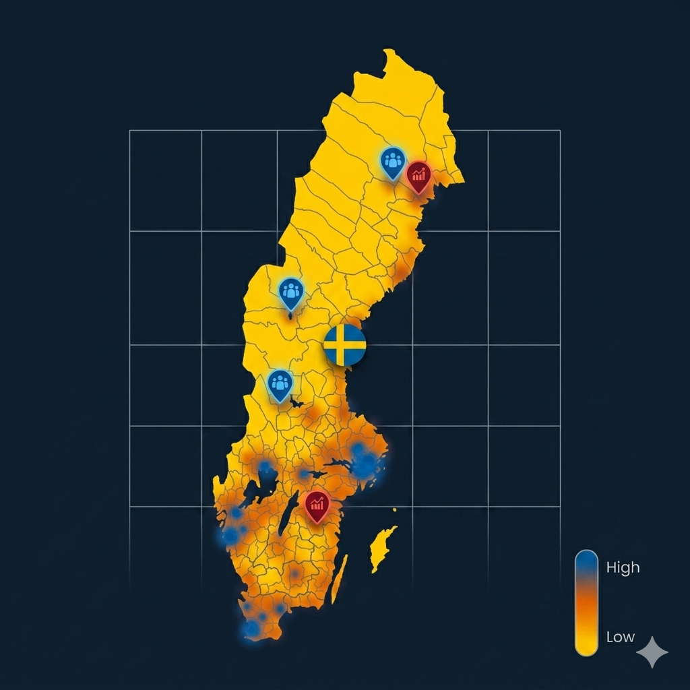
The Challenge: From Raw Numbers to Regional Insights
Sweden is a country known for its high degree of digitalization and rich public record data. However, for a business aiming to scale, the sheer volume of this data—available from disparate sources like Statistics Sweden (SCB)—can be overwhelming. The standard tools often only offer high-level municipality data, which hides the crucial micro-level trends needed for precise marketing research.
Our clients need granular knowledge:
- Where is the population growing most rapidly?
- What is the demographic composition (age, gender, family structure) of specific new development areas?
- Which zip codes represent the highest consumer potential for specific services?
Our primary objective was to move beyond high-level summaries and harness the power of granular public data, but to do so with unwavering ethical responsibility. This involved a meticulous process of aggregating information at the most foundational statistical levels available in Sweden: the Demographic Statistical Areas (DeSO) and the Regional Statistical Areas (RegSO). These low-level, anonymized units provided the critical building blocks for our analysis. By using these hyper-local statistical areas, we could construct a dynamic visualization engine that is both highly intuitive and high-resolution. The visual platform we developed allows users to break free from traditional, static spreadsheets and actively explore the demographic fabric of the country. With this granular view, one can identify nuanced, street-level density patterns, spot emerging population trends within specific zip codes, and generate sophisticated queries that reveal insights impossible to see at a broader municipality or county level. This high-definition, interactive approach transforms abstract statistics into a visible roadmap for advanced market research and precise, compliant lead generation.
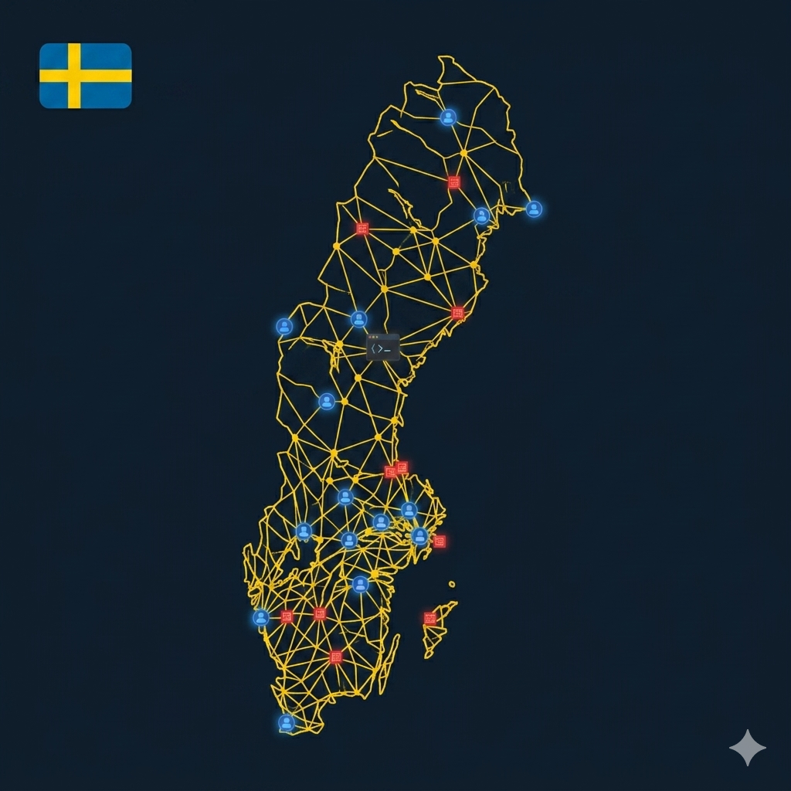
Our Solution: The Demographic Visualization Engine
We developed a robust, secure data pipelining and visualization system. The engine ingests anonymized, high-density public dataset and projects them onto an interactive map.
By choosing to aggregate this data at a small statistical-area level rather than an individual address level, we could create a remarkably detailed map that remains fully compliant with privacy regulations while still offering immense value.
The resulting visualization tool allows user to:
- Zoom into street-level density: Identify every pocket of potential, from rural hamlets to bustling urban street blocks.
- Toggle between demographic overlays: instantly switch views from population density to median income estimates, average household size, or age distribution.
- Perform complex zip code queries: Run advanced queries to find all zip codes matching specific demographic criteria (e.g., "Find all areas with >20% growth in residents aged 25-35 over the last 5 years").
Real-World Business Applications
For our clients, this tool is a game-changer. Our visualization maps are now being used for:
- Precision Marketing: Optimizing physical and digital ad spend by targeting only the most relevant micro-regions.
- Retail Expansion: Conducting feasibility studies for new store locations based on actual resident density.
- High-Quality Lead Generation Strategy: Developing focused outreach plans by identifying regions that match a highly specific ideal customer profile (ICP).
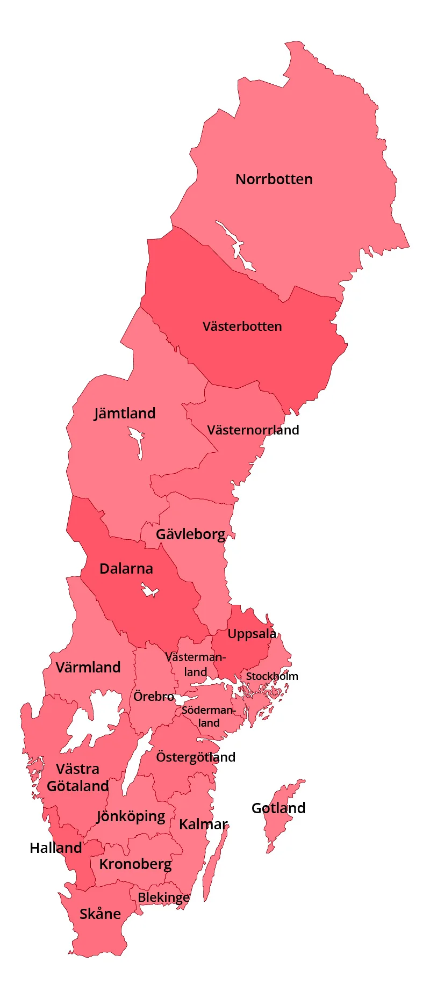
- Norrbottens län
- Västerbottens län
- Jämtlands län
- Västernorrlands län
- Gävleborgs län
- Dalarnas län
- Uppsala län
- Värmlands län
- Västmanlands län
- Stockholms län
- Örebro län
- Södermanlands län
- Östergötlands län
- Jönköpings län
- Västra Götalands län
- Gotlands län
- Kronobergs län
- Hallands län
- Kalmar län
- Blekinge län
- Skåne län
These counties serve as the essential regional subdivisions that govern key public services like healthcare, public transport, and regional development. Understanding these 21 jurisdictions is the strategic entry point for analyzing the country. However, our sophisticated demographic visualization engine moves beyond these broad municipality borders to harness the power of hyper-local data. Our platform visualizes Sweden by aggregating information at a low level, specifically using the Demographic Statistical Areas (DeSO) and Regional Statistical Areas (RegSO) frameworks.
While the 21 Län provide the high-level roadmap, our tool delves deeper, visualizing patterns across all 290 Kommuner (Municipalities) and the foundational 6,160 DeSO areas. This allows for a unique dual perspective: visualizing a broad multi-county trend alongside surgical, street-level population density and consumer potential analysis, enabling precise, compliant, and deeply insightful market research across the entire nation.
1. Norrbotten
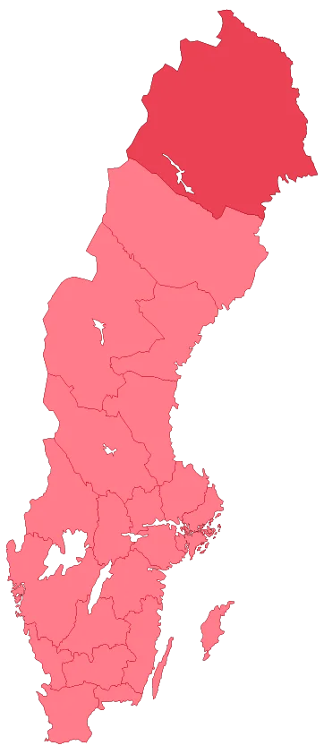
Allmänna fakta
Yta: 97 200 km²
Folkmängd: 249 200
Folktäthet: 2,6 inv./km²
Residensstad: Luleå
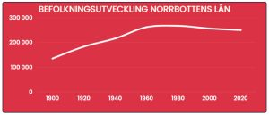
Norrbottens Län (SE-BD): As Sweden's vast northern frontier and the primary epicenter of the nation's colossal green industrial transformation (e.g., H2 Green Steel in Boden, LKAB in Gällivare), Norrbotten is a prime candidate for our volumetric 3D analysis. High-level regional numbers are deceptive; they hide the intense, rapid urban and demographic growth occurring in tightly focused economic hubs like Luleå, Boden, and Skellefteå (in the bordering region). Our engine assists clients in identifying and mapping these hyper-growth zones, revealing where to deploy infrastructure, hospitality services, and retail supply chains in anticipation of influxes of skilled labor and new residents supporting the fossil-free economy. We analyze where residential areas are emerging alongside expanding industrial complexes to optimize resource allocation.
2. Västerbotten
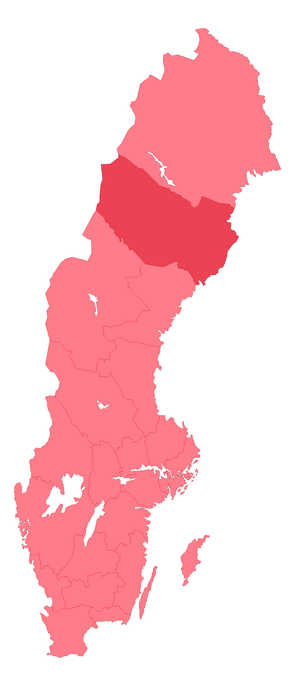
Allmänna fakta
Yta: 54 700 km²
Folkmängd: 276 300
Folktäthet: 5,1 inv./km²
Residensstad: Umeå
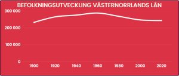
Västerbottens Län (SE-AC): Led by the dynamic knowledge hubs of Umeå and the rapid energy-sector and battery-tech expansion of Skellefteå (Northvolt), Västerbotten presents a unique contrast. We are not just mapping the student and permanent resident population growth in Umeå; we are visualizing the entire lifecycle of new residents in Skellefteå, from temporary worker housing to emerging permanent family residential clusters. Our platform assists educational providers, technology suppliers, and property developers in identifying specific low-level demographic areas (DeSO) where high-skilled, diverse populations are concentrating. We help businesses understand the consumer potential within these burgeoning micro-markets, moving beyond high-level average statistics to find precise investment opportunities in the north's innovation corridor.
3. Jämtland
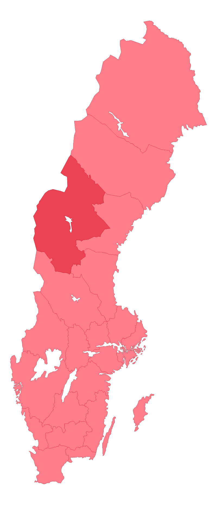
Allmänna fakta
Yta: 48 900 km²
Folkmängd: 132 700
Folktäthet: 2,7 inv./km²
Residensstad: Östersund
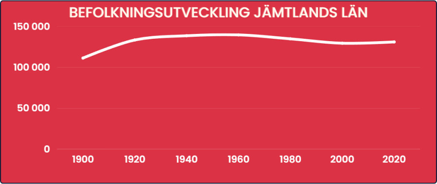
Jämtlands Län (SE-Z): In a vast, low-density county primarily characterized by a wilderness-driven economy and extreme tourism-based surge profiles (e.g., Åre, Funäsdalen), high-resolution spatial mapping is critical for year-round operational planning. Our demographic engine moves far beyond static, broad municipality statistics to help businesses visualize the delicate relationship between stable, permanent resident densities and the powerful seasonal population influxes. We assist regional utility planners, high-end outdoor retailers, and transport providers in identifying the exact locations and timeframes where demand surges will occur. This is not about municipality averages; it is about pinpointing the hyper-local communities that support significant tourism-driven revenues, allowing for surgical investments in infrastructure and targeted marketing for the permanent, stable residential market.
4. Västernorrland
Allmänna fakta
Yta: 21 500 km²
Folkmängd: 243 300
Folktäthet: 11,3 inv./km²
Residensstad: Härnösand
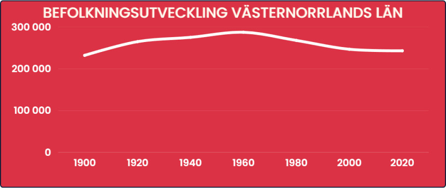
Västernorrlands Län (SE-Y): Primarily a coastal industrial corridor structured around key economic nodes like Sundsvall, Härnösand, and Örnsköldsvik, this county requires precise cross-city segmentation. High-level analysis often misses the vital interconnectivity. Our interactive platform helps clients visualize the demographic clusters that bridge these distinct urban areas, mapping the specialized labor forces and consumer densities supporting the region’s dominant forestry and manufacturing base. For the knowledge-driven service sector and the logistics industry, this means identifying precise micro-regions with high skilled-labor potential or specific traffic corridor density. We analyze these demographic corridors to reveal efficient multi-regional retail models and service delivery points that tap into multiple population centers.
5. Gävleborg
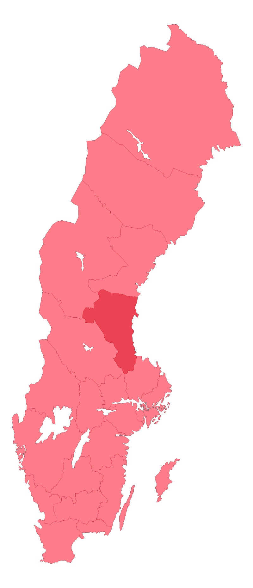
Allmänna fakta
Yta: 18 100 km²
Folkmängd: 287 300
Folktäthet: 15,9 inv./km²
Residensstad: Gävle
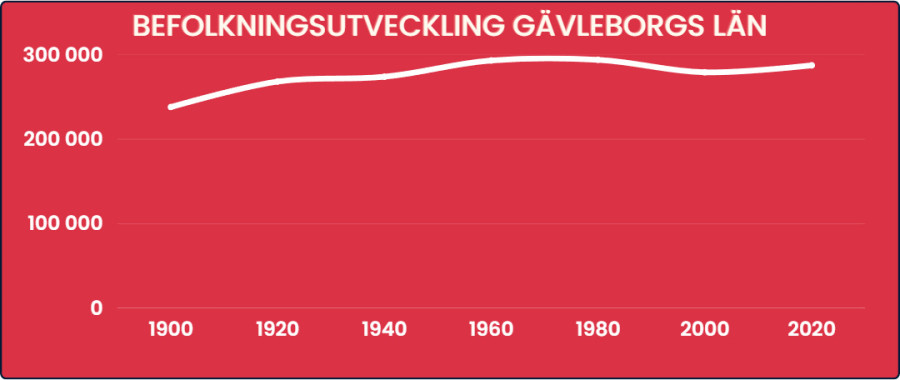
Gävleborgs Län (SE-X): Mapping the maritime exit corridor for northern industrial goods and the burgeoning green energy sector near the Gävle port requires an intense focus on economic-sector clustering. Our engine provides clarity by directly contrasting the traditional manufacturing and transport densities in older industrial zones against the emerging, highly concentrated population clusters of new residents and commuters around the key port of Gävle. This is vital intelligence for B2B service suppliers, global logistics operators, and commercial real estate developers. We help clients move beyond average city figures to find the exact street blocks and development areas where industrial and demographic patterns are shifting toward the harbor, optimizing the location of warehouses, support offices, and specialized services.
6. Dalarna
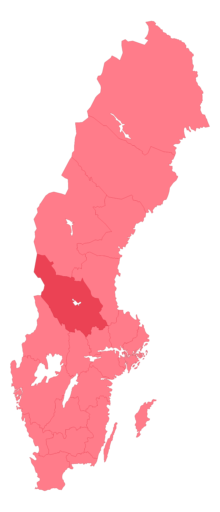
Allmänna fakta
Yta: 28 000 km²
Folkmängd: 288 300
Folktäthet: 10,3 inv./km²
Residensstad: Falun
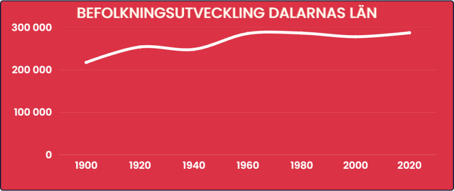
Dalarnas Län (SE-W): The central demographic challenge in Dalarna is contrasting the large, stable residential base in the heavy manufacturing towns of Borlänge, Falun, and Avesta against the extreme surge profiles of high-profile tourism hubs like Sälen and Mora. Using our advanced 3D volumetric views, we can differentiate between stable, long-term residential patterns and powerful, recurring tourism-driven density peaks. This high-resolution visualization platform helps clients identify and evaluate the specific zip codes that maintain robust, year-round commercial services. It reveals whether a region has deep, stable consumer demand to support permanent investment, versus the potential of a purely surge-driven, variable-revenue location.
7. Uppsala
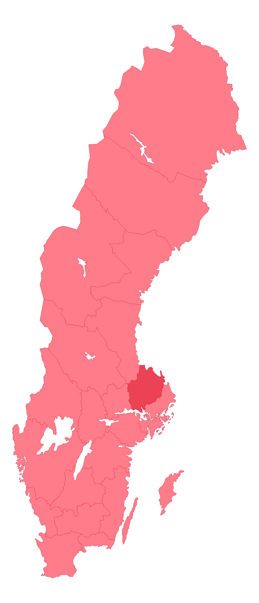
Allmänna fakta
Yta: 8 200 km²
Folkmängd: 400 700
Folktäthet: 48,9 inv./km²
Residensstad: Uppsala
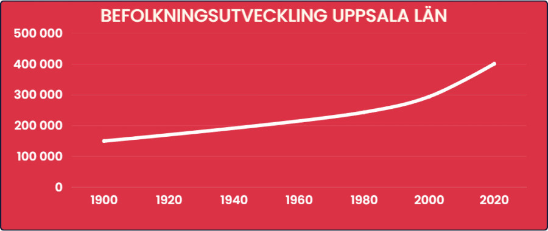
Uppsala Län (SE-C): Uppsala Län is Sweden’s fastest-growing, commuter-driven knowledge region, fueled by both a permanent knowledge economy base (university, biotechnology, software) and a massive Stockholm commuter population. A simplistic municipality view misses the crucial segmentation required here. Our demographic platform uses hyper-localDeSO data to carefully segment permanent residential clusters near knowledge hubs (e.g., academic staff, tech employees) from the large and fluid student populations. We help new property developers, transport providers, and innovative consumer service companies identify emerging residential areas—outside of Uppsala’s core—where affluent commuter families are concentrating, revealing untouched high-potential micro-markets that support sustainable long-term business models within the greater Stockholm influence sphere.
8. Värmland
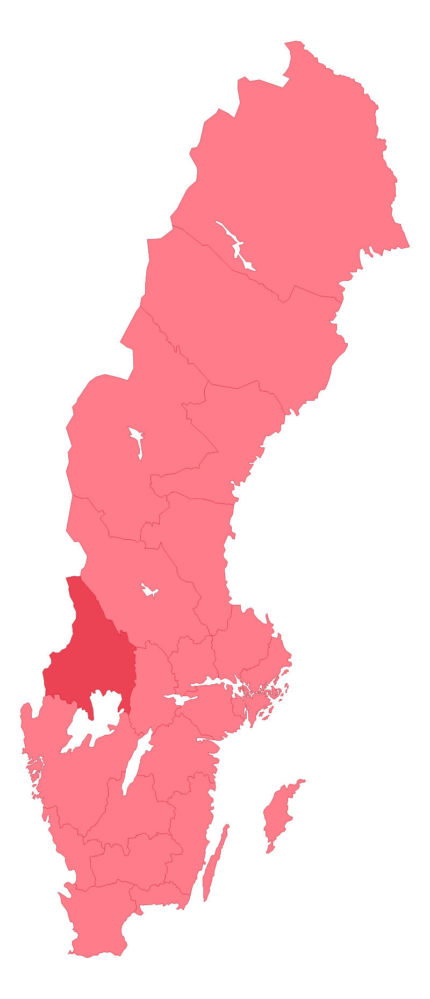
Allmänna fakta
Yta: 17 500 km²
Folkmängd: 284 000
Folktäthet: 16,2 inv./km²
Residensstad: Karlstad
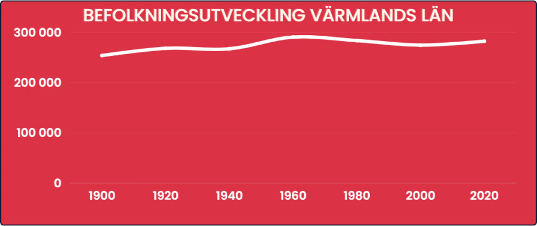
Värmlands Län (SE-S): As a vast county with a significant forestry-industrial landscape but focused around Karlstad as the clear regional consumer hub, high-level analysis will misdirect a physical retail strategy. Our high-resolution maps assist retail chains, healthcare providers, and regional logistical operators by revealing the concentrated consumer pockets and traffic densities along the critical E18 transport corridor and the northern Vänern coast. We help businesses determine the optimal hub-and-spoke models for service distribution, finding the precise street blocks in Karlstad to support maximum catchment versus the strategic locations for regional distribution nodes in larger municipalities. We transform vast geographic data into a focused map of optimal commercial nodes and transportation efficiencies.
9. Västmanland
Allmänna fakta
Yta: 5 100 km²
Folkmängd: 280 700
Folktäthet: 54,8 inv./km²
Residensstad: Västerås
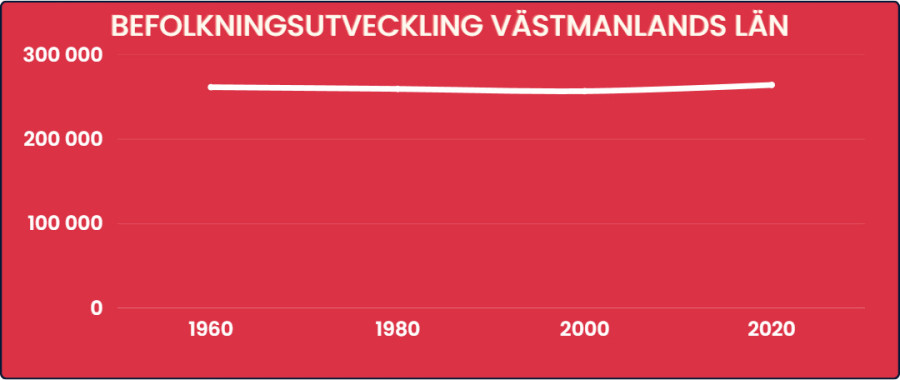
Västmanlands Län (SE-U): Combining a high-tech industrial base in Västerås with a strong commuter link to Stockholm, Västmanland requires an analysis that segments economic power from commuting patterns. Our interactive visualization tool helps clients identify and segment distinct micro-regions: the highly concentrated high-tech clusters where specialized labor forces live; the burgeoning commuting hubs where affluent families are settling outside of the city center; and the stable, long-term industrial zones. We assist B2B tech suppliers, global logistics firms, and new prop-tech ventures in pinpointing these precise micro-markets for targeted outreach, revealing high-yield opportunities that standard broad statistical tools completely obscure.
10. Stockholm
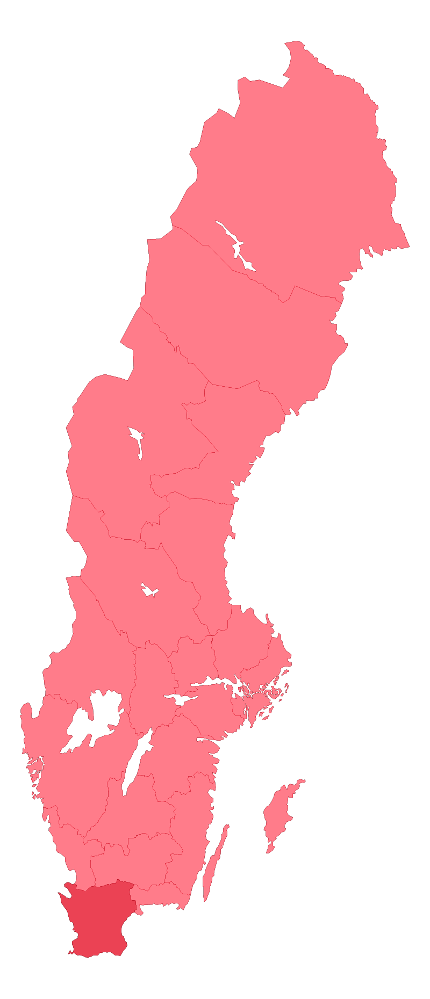
Allmänna fakta
Yta: 6 500 km²
Folkmängd: 2 440 000
Folktäthet: 374 inv./km²
Residensstad: Stockholm
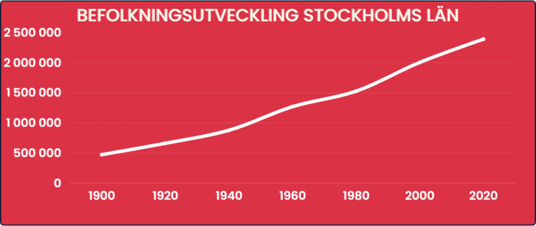
Stockholms Län (SE-AB): This is Sweden’s unchallenged economic, technological, and demographic core, where broad municipality-level analysis is not just insufficient—it’s a competitive failure. The sheer density and diversity demand hyper-granular segmentation using the most refined DeSO areas available. Our visualization platform breaks down Stockholm into hundreds of distinct micro-markets, allowing clients to: map emerging high-tech residential pockets in Solna, track evolving commuter corridors around high-speed rail, identify the affluent micro-neighborhoods of Östermalm with precision retail potential, and reveal the emerging demographic shifts in diverse outer-suburban hubs. This high-definition, interactive map transforms a generic massive dataset into a visual roadmap for precision targeting and surgical resource deployment in Scandinavia’s largest market.
11. Örebro
Allmänna fakta
Yta: 8 500 km²
Folkmängd: 307 772
Folktäthet: 36,2 inv./km²
Residensstad: Örebro
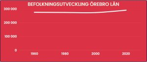
Örebro Län (SE-T): Strategically centered as Scandinavia’s primary logistics and transportation hub, Örebro’s economic profile is defined by transport corridors and cross-regional movement. Broad data will not reveal a logistical advantage. Our engine provides clarity by mapping critical intersections and traffic corridors—the optimal points for warehousing and distribution centers—and visualizing the concentrated consumer density pockets that support these hubs. We help multi-regional retailers and transport firms move beyond average statistics to find the precise street blocks and development areas where industrial and demographic patterns are converging. We assist in identifying new warehouse locations that optimize delivery to the widest possible demographic cluster with maximum structural efficiency.
12. Södermanland
Allmänna fakta
Yta: 6 100 km²
Folkmängd: 302 600
Folktäthet: 49,8 inv./km²
Residensstad: Nyköping
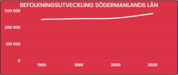
Södermanlands Län (SE-D): Transitioning rapidly from its heavy industrial heritage (e.g., Eskilstuna, Oxelösund) to a modern, commuter-friendly profile, Södermanland requires a dynamic, time-series visualization. Broad, static statistics miss the emerging growth corridors. Our interactive platform helps property developers, consumer logistics, and service sector firms visualize new development zones that align with fast commuter rail links to Stockholm. We track the conversion of former industrial neighborhoods into dense, commuter residential areas, identifying specific low-level demographic areas (DeSO) within Eskilstuna and Nyköping that support a higher-income, commuter profile, revealing stable market niches ideal for new infrastructure, luxury services, and targeted retail.
13. Östergötland
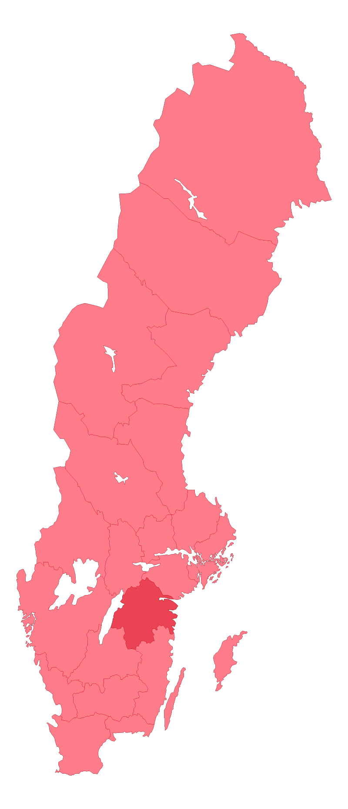
Allmänna fakta
Yta: 10 600 km²
Folkmängd: 471 900
Folktäthet: 44,7 inv./km²
Residensstad: Linköping
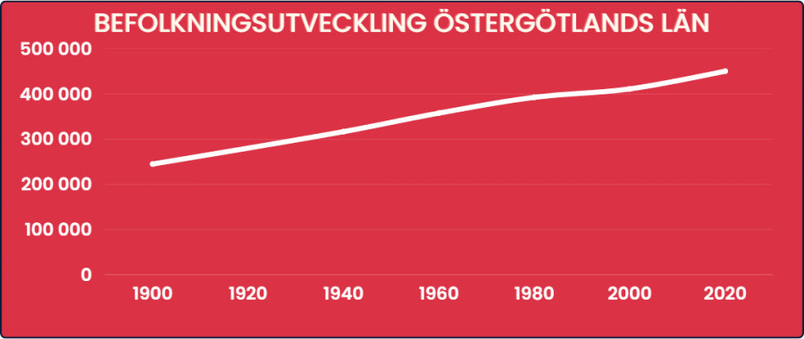
Östergötlands Län (SE-E): Centered on manufacturing, logistics, and high-tech innovation, particularly in the corridors connecting Linköping (aviation, tech) and Norrköping (manufacturing, tech). Our demographic engine provides clarity by segmenting the unique profiles of these two cities: the high-tech, highly-educated workforce in Linköping and the large, stable industrial and logistics workforce in Norrköping. We assist multi-regional B2B service firms, commercial developers, and innovative consumer service companies in pinpointing these distinct labor pools and consumer densities for specialized marketing outreach. We assist in finding precise areas for logistics hub expansion that provide maximum accessibility to both industrial zones and knowledge districts, optimizing B2B service delivery across the double-city region.
14. Jönköping
Allmänna fakta
Yta: 10 400 km²
Folkmängd: 369
100
Folktäthet: 35,4 inv./km²
Residensstad: Jönköping
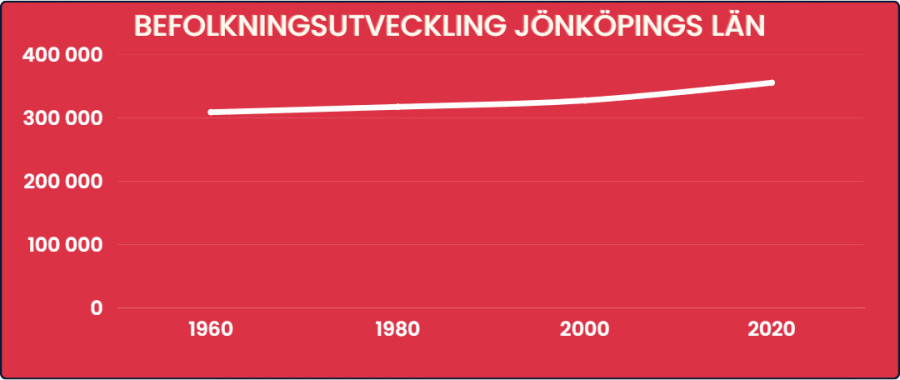
Jönköpings Län (SE-F): Renowned as Sweden’s engine of trade and manufacturing SMEs, Jönköping’s economic profile requires an analysis that segments distinct commercial and entrepreneurial zones from quiet, stable residential areas. Our high-resolution maps are indispensable for new prop-tech firms and B2B service suppliers. Our platform breaks down the county into a map of SME densities and entrepreneurial micro-markets, moving far beyond broad municipality average data. We assist businesses in pinpointing precise high-potential B2B lead clusters around trade parks and industrial zones, and differentiating them from emerging affluent residential micro-regions that support long-term investment.
15. Västra Götaland
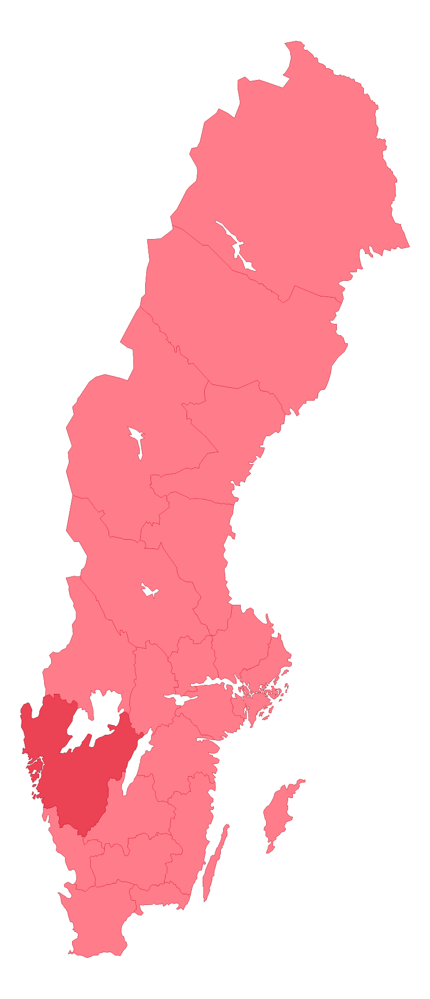
Allmänna fakta
Yta: 23 800 km²
Folkmängd: 1
758 700
Folktäthet: 73,9 inv./km²
Residensstad: Göteborg
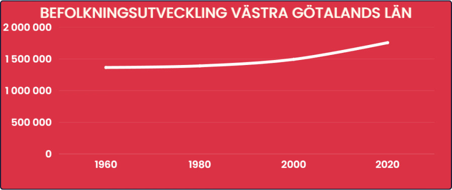
Västra Götalands Län (SE-O): Dominating Nordic logistics and industry, this region requires an intense focus on highly concentrated cluster mapping, particularly around Scandinavia’s largest port. The broad municipality statistics for Gothenburg and Borås completely hide the critical micro-level trends needed for strategy. Our high-resolution visualizations provide immediate clarity by carefully segmenting massive industrial and manufacturing zones from distinct innovation and knowledge districts (e.g., Lindholmen) and the vast commuter family zones surrounding the core cities. This is vital intelligence for specialized industrial services, global logistics firms, and new commercial property developers, allowing for surgical investments in infrastructure and highly targeted lead generation strategy.
16. Gotland
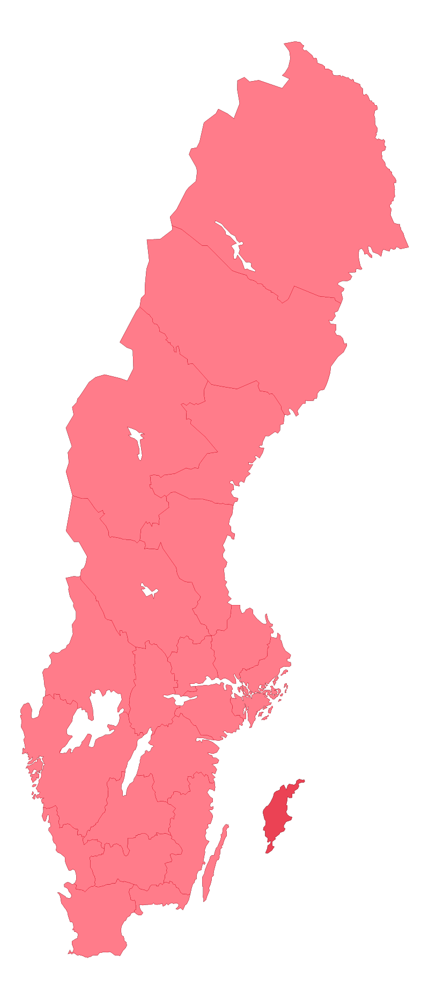
Allmänna fakta
Yta: 3 100 km²
Folkmängd: 61
200
Folktäthet: 19,5 inv./km²
Residensstad: Visby
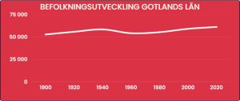
Gotlands Län (SE-I): Sweden’s distinct island market demands the absolute highest resolution spatial analysis to handle extreme density shifts. municipality-level statistics are virtually useless. The profound population difference between the ancient capital, Visby, the vast, low-density permanent rural resident communities, and the incredible, rapid summer population peaks requires refined data to manage operations effectively. Our visualization tool assists regional utility planners, transport operators, and luxury consumer brands in identifying the exact locations and timeframes where infrastructure, energy usage, and demand will peak. We help businesses determine the precise balance of services needed to support the permanent, year-round economy versus the hyper-variable needs of the high-season surge market.
17. Kronoberg
Allmänna fakta
Yta: 8 400 km²
Folkmängd: 204 300
Folktäthet: 24,3 inv./km²
Residensstad: Växjö
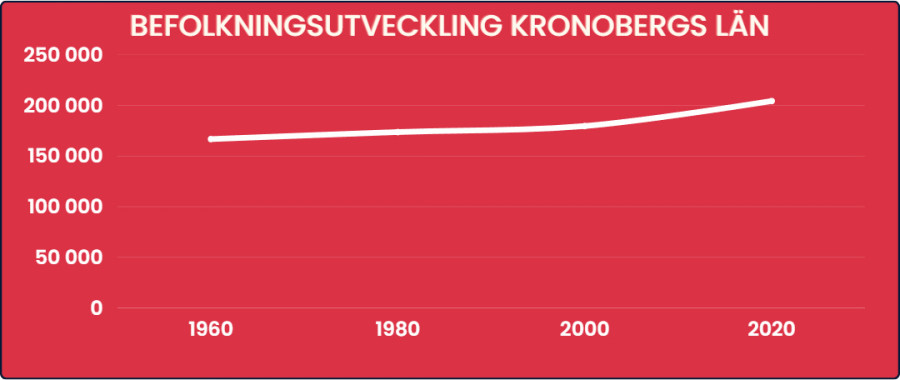
Kronobergs Län (SE-G): A core engine of Sweden's SME innovation with a stable, family-oriented demographic. Broad statistics are misleading; they obscure the emerging growth areas around the regional hub. Our high-resolution visualizations assist clients in identifying specific low-level demographic areas (DeSO) within the stable suburban rings surrounding Växjö. These precise maps reveal growing residential clusters where affluent, stable families are concentrating, uncovering untouched market niches ideal for innovative family consumer products and long-term services, moving beyond broad county average figures to find stable commercial nodes.
18. Halland
Allmänna fakta
Yta: 5 400 km²
Folkmängd: 342 800
Folktäthet: 63,2 inv./km²
Residensstad: Halmstad
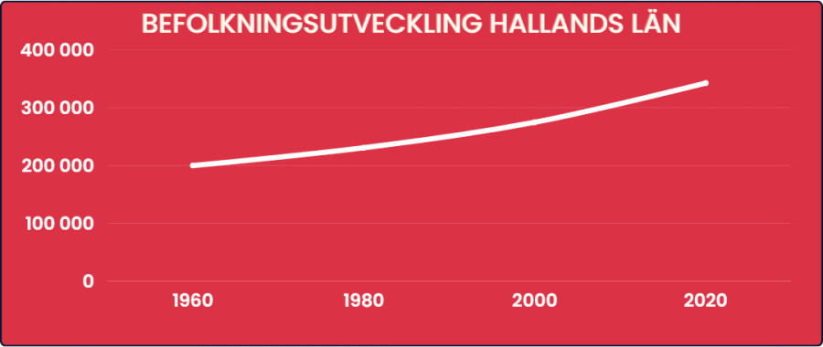
Hallands Län (SE-N): Halland is Sweden’s fastest-growing commuter belt, a powerful demographic corridor serving both the Gothenburg influence sphere and a robust seasonal coastal market. Our interactive visualization tool helps developers, retailers, and logistical operators map these dynamic shifts. We assist Prop-Tech ventures, commuting rail planners, and retail chains in identifying emerging development corridors where high-income commuter families are concentrating, tracking long-term growth and identifying stable market niches perfect for long-term investments in infrastructure and high-quality services.
19. Kalmar
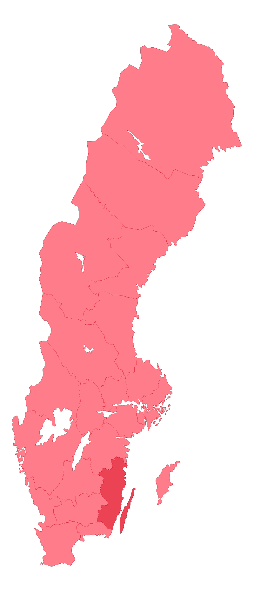
Allmänna fakta
Yta: 11 200 km²
Folkmängd: 247 700
Folktäthet: 22,2 inv./km²
Residensstad: Kalmar
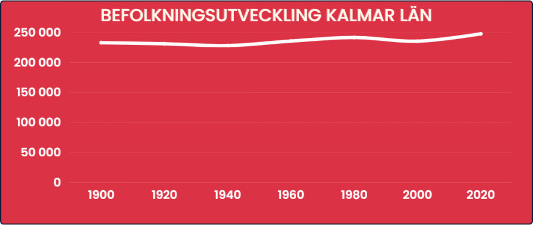
Kalmar Län (SE-H): For Kalmar, the main demographic challenge is mapping the powerful relationship between stable, permanent resident densities and the high-surge, tourism-driven coastal strip. The broad statistics obscure the critical segmentation required for efficient long-term operations. Our high-resolution maps assist clients in differentiating between year-round consumer demand and seasonal market peaks. This is vital intelligence for multi-regional retail distribution, utility planning, and consumer services that must handle variable density. We help businesses pinpoint precise, stable residential densities that support robust commercial nodes and identifying optimal points for distribution to support the variable, hyper-surge market with maximum efficiency.
20. Blekinge
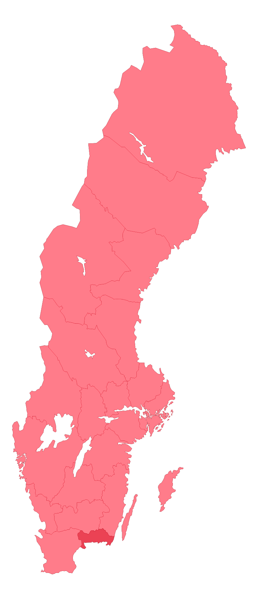
Allmänna fakta
Yta: 2 900 km²
Folkmängd: 158 700
Folktäthet: 54,2 inv./km²
Residensstad: Karlskrona
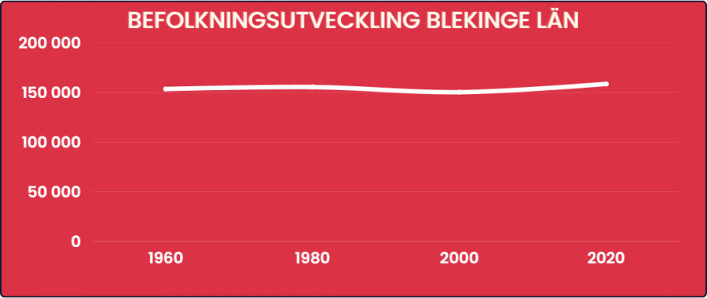
Blekinge Län (SE-K): A compact, highly specialized coastal region with economic clusters tightly built around high-tech defense, maritime, and innovative industrial sectors. High-level analysis often misses these tight relationships. Our demographic visualizations assist multi-regional B2B service firms, defense suppliers, and specialized labor recruiters in pinpointing the highly concentrated population clusters where the specialized labor force supporting Karlskrona port and the tech corridor resides. We help clients move beyond average city statistics to find precise micro-market opportunities that align with specific economic sectors.
21. Skåne
Allmänna fakta
Yta: 11 300 km²
Folkmängd: 1 414 300
Folktäthet: 125 inv./km²
Residensstad: Malmö
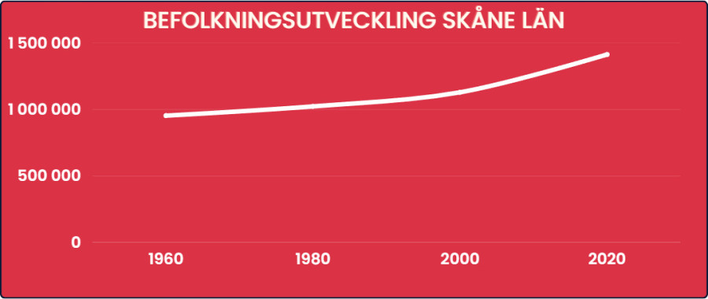
Skåne Län (SE-M): As a hyper-urbanized powerhouse linked inextricably to the cross-border Öresund region, Skåne demands a high-resolution analysis that simultaneously segments distinct city profiles and maps regional interconnectivity. municipality-level statistics hide these complex relationships entirely. Our interactive visualization tool helps clients map these dynamic cross-border demographic flows—essential intelligence for multi-regional retail networks, logistics operators, and Cross-Border Prop-Tech ventures. We segment the unique profiles of Malmö, Lund, and Helsingborg, identifying emerging growth corridors that connect these distinct population hubs and revealing untapped consumer densities. We assists multi-regional businesses in developing focused strategies that bridge multiple city-regions with maximum catchments.
Conclusion: Data is the Roadmap
In a digitally mature market like Sweden, businesses cannot afford to guess. By transforming aggregated public data into visual intelligence, we are providing our clients with the roadmap they need to navigate the market with confidence and precision. At [Your Dev Agency Name], we build the tools that let you see the future of your market.